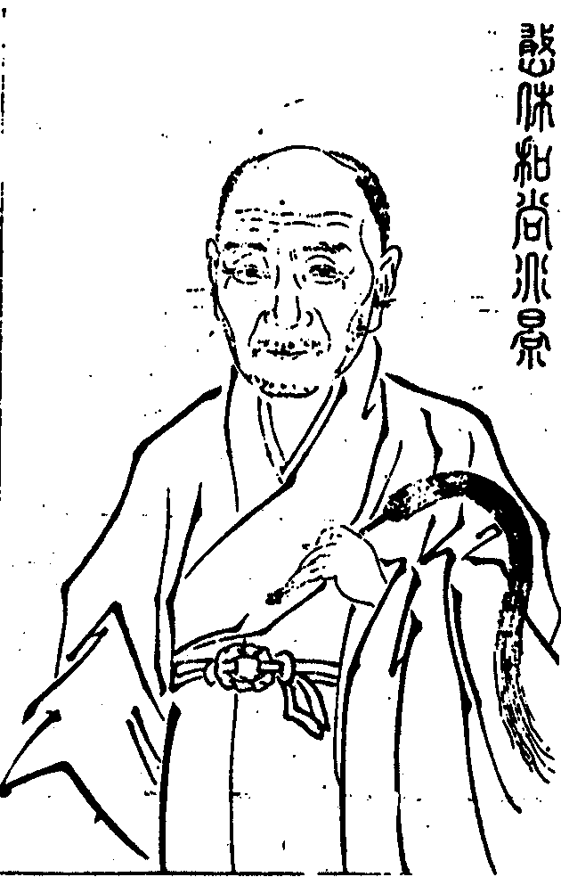

嘉興大藏經 第37冊
No.B383 憨休禪師語錄 (12卷)
【繼堯等編】
第 1 卷

師諱如乾號憨休蜀西龍安人胡姓十九歲出家二十二歲圓具遂行腳江浙遍參諸大宗匠之門隨處皆有悟入丁未遊少林過風穴參雲峨和尚機緣相契親炙六載乃授記莂於康熙壬子入秦開法涇陽興福禪寺後遷廣教清福燉煌金粟諸剎甲子住興善戊辰住風穴師為人厚重聲清氣雄胸次磊落不立崖岸機鋒峻利說法如雲兼博通文翰士大夫見者咸悅服焉九坐道場開堂七剎門人錄其要語十二卷附集敲空遺響十二卷並行於世。
金城弟子弘善謹識
序
曩余侍
經筵日講之暇探討竺墳獲傳燈錄讀之載臨濟喫黃蘗三頓痛棒悟得達磨西來的的大意後住河北建立宗旨凡見僧入門便棒入門便喝不容情解痛快直截如俊鷹快鷂一味生擒活捉雖五宗並列惟臨濟獨盛憨休和尚乃臨濟下第三十三世之孫風穴雲峨老人之嫡嗣也具頂門正眼光爍天下隨機應荅如轟雷掣電靡測端倪利刃吹毛干犯不可有黃蘗大機之用得臨濟格外全提真獅子王哮吼不啻裂碎野狐心膽縱是鐵額銅頭直教命根頓斷矣信夫山堂淳之言宗祖高明子孫光大良有以也讀斯錄者不得以語言文字求之當相忘於語言文字之外而後可。
序
瞿曇氏之教微妙甚深令人難解難入讀之者如河伯望洋莫測涯際其後達磨來梁不立文字直指人心見性成佛謂之教外別傳至曹谿盧能大師枝分二派禪列五宗電掣雷轟日滋月盛考亭常曰達磨西來盡翻窠臼猶為高妙故吾儒往往多心向而逃禪者蓋必有所取也余事理學未究禪宗乙酉丙戌之際與吾友陳旻昭侍御遊侍御深於逃禪者也因得參宗門尊宿見其寓直指於痛棒示神妙於微拈庶幾靈山一會儼然未散哉諸方異尚道岸咸登獨華河上乘未聞有心人西向而悲非一日矣庚子歲風穴雲峨老人始卓杖入關開堂振響秦之緇素如睡夢覺天龍人鬼煥然改觀撥雲霧而睹白日也憨休和尚荷風穴正法眼藏不憚遠涉更弘宗旨杖履所至風飆雷動匪但匹夫匹婦之所皈向即吾縉紳士夫凡有志夫性命之學者慮無不捨身向道腰忘帶足忘履矣觀其隱心救世善誘接人鉗錘即以指心問答即以見性棒喫百頓機契片言斯誠釋氏之雄拔乎其萃者庸詎出黃面瞿曇之下師壬子住興福杖過嘉慶與余一見如舊相識其後七坐道場隨處說法門人集語錄若干卷梓以播世欲使世間得與於斯錄者認本來面目懸崖萬丈可以撒手遊行顧進退勇怯何如耳道豈遠人哉若夫鈍根自閉之夫絕不知有向上一路雖鐵船可渡木馬可鳴悟此者其誰與余雖從昔者吾友之後於至道稍有知識要亦門外漢不足語入室心印世不乏個中人必將有會於斯編。
憨休乾禪師語錄目錄
憨休乾禪師語錄卷第一
住陝西西安府涇陽縣興福禪寺語錄
康熙十二年癸丑二月初三日師在華州甘露寺受請於初七日入院至山門云觸處洞然目前無異路當陽直截格外有靈機分明八字打開未免指南一上曳杖便入。
佛殿金沙灘頭馬郎婦跣足露胸杖林山下竹筋鞭撐天拄地新興福今日別行一路遂撒開坐具云看大展三拜。
祖堂西天四七東土二三移星換斗互相熱瞞不肖兒孫今到此全身迴避最為難乃以坐具打圓相云交。
韋馱普眼圓明現威容而等慈品彙作家手段宣甲冑以振肅魔林遂豎拂子云欲得這個流通須仗極力匡助。
伽藍其為氣也至大至剛式彼靈兮不生不滅忠勤漢室而大義參天呵護法門而衛嚴金地興福攸賴於今日玉泉記莂於當年且以何為驗遂插香云願將歸帝擎天手剔起靈山照世燈。
方丈室掩摩竭塞耳偷鈴杜口毘耶揚聲止響新長老也無如許伎倆惟據一條白棒朝打三千暮打八百何故興福門下令不虛行。
開堂師至法座前拈疏云發明妙覺真心流通正法眼藏須憑這個如其會得不消錦上鋪花脫或滯殼迷封更煩表白宣過讀畢以拄杖指
法座云此大寶華王座從上老古錐據之倒弄顛拈生陷無間地獄即今乾上座業債相牽推免不下只得隨隊亦向其中撒土撒沙去也還見麼便陞座告香云此瓣香體元居正開帝網於三千建極立中衍龍圖於萬億信手拈來爇向寶爐端為祝延
皇帝聖躬萬歲萬萬歲欽願常光佛日將雨曜以齊明永御金輪等二儀而遠大次拈云此瓣香得尼山精一之真傳鹽梅鼎鼐協飛龍九五之治化霖雨蒼生奉為滿朝文武天下官僚本縣邑侯及諸衙勳貴伏願福源洪注如日月之升恒祿位崇遷似河山之帶礪復拈云此瓣香兆形始地靈根早固於劫前判氣先天枝葉繁茂乎今世奉為今辰請主護法檀那紳衿文學並及在筵耆德伏願寸心不昧常開般若之花一念圓明當結菩提之果又向懷中拈出一瓣香示眾云諸人還知麼二十餘年楚水吳山辛苦受盡後至汝海山中遇著個無面目老尊宿被他驀與一錘漆桶打破於今冷地光生不敢囊藏被蓋恭對人天眾前拈出爇向寶爐奉為現住河南汝州風穴山白雲禪寺傳臨濟正宗第三十二世
本師雲峨大和尚不為酬恩報德要使大眾咸知遂攝衣敷坐上首白椎云法筵龍象眾當觀第一義師云撥草瞻風二十秋全機不動信優游無端扶上華王座擘破三元接上流人天既集法令當行殺活臨時全體獨露只如第一義諦還有解觀者麼出來相見僧問少室安心斷臂得髓風穴待讖鐵牛呈機向上一著則不問如何是五家宗旨師云西風吹渭水落葉滿長安進云如何是臨濟宗師云生鐵崑崙顛倒舞金烏玉兔絕光輝進云如何是曹洞宗師云銀犀海外弘離坎木馬雲中判午寅進云如何是雲門宗師云川烏根下生甘草芍藥花中結柘榴進云如何是溈仰宗師云雲籠古洞連山罩月出長灣帶水明進云如何是法眼宗師云會得唯心萬法空頭頭盡露真消息進云五宗已蒙師指示出身一句事若何師云石安原下涇水東流進云恁麼則學人禮拜去也師云切忌躲跟僧作禮師打云放過則不可問斬新日月特地乾坤祖印高提壁立萬仞逢人即出則不問如何是斬新日月師云未離汝海千山暗纔上中天萬國明進云如何為人師云一棒一條痕進云恁麼則遍界潛消狐犴跡獰獅出現爪牙雄師云汝且喫棒便打乃云宗乘一唱三藏絕詮至道恢弘千途合轍眾流截斷遍塵剎而任運全該妙轉元樞括有無而憑垂指注光超日月智出聖凡動靜無私隱顯不昧髑髏常干世界鼻孔摩觸家風綿密安詳權開洞山五位暗機圓合要出溈仰三生一字關大雲門之高古六相義攝法眼之現成奪境奪人直捷痛快立賓立主大用天旋印水印泥印空匪作家難辨非心非佛非物唯證者乃知似地普擎如天普蓋真機剖露萬法全彰正恁麼時文殊普賢起佛見法見興福各與二十棒貶向二鐵圍山則且止且道即今開堂祝聖一句作麼生道擊壤歌揚忘帝力由庚詩詠樂時雍(謝詞不錄)復舉寶壽開堂日三聖推出一僧寶壽便打三聖云恁麼為人瞎卻鎮州一城人眼去在寶壽擲拄杖便歸方丈師云無勘驗龍蛇眼目難以荷負宗乘有超情越量機權方能鉗錘佛祖寶壽三聖二大老雖則拳踢相應酬唱無虧要做臨濟下烜赫兒孫猶未可在且道如何是臨濟兒孫以拄杖捺膝云橫按莫邪全正令太平寰宇斬癡頑上首復結椎云諦觀法王法法王法如是下座。
請執事上堂僧問如何是先照後用師云汝問甚麼進云如何是先用後照師云答汝了也進云如何是照用同時師云鐵輪天子寰中敕進云如何是照用不同時師云帝釋宮中放赦書僧禮拜乃云法不孤起仗境方生獨掌不鳴兩手斯應華王綴葉方播絕世奇馨鸚鵡乘風得展凌雲妙翅所以宗旨欲建成褫固是耆年法社新開變理在於昆弟漫言皮膚脫盡腦後更欠一椎只饒明暗兩忘元中猶有三要威音王前行道未免移過缽盂知是般事便休早已腦門著地文不加點諱處結搆藏鋒兩年一春好生修事供養贓物現在刈得三百個祖師食已先饞何曾不入這保社興福今日量才補職高下得宜都來向無陰陽地上安排藏身之處沒蹤跡於無生國內楨幹沒蹤跡處莫藏身匪但毘贊宗猷要使爪牙俱備挐雲攫霧人人奪獅子之獰威浴日光風個個展鳳鸞之健翮然雖如是且高豎法幢共相建立一句又作麼生道妙舞應知誇遍拍三臺須是大家催。
結制上堂僧問實際理地不受一塵佛事門中缺一不可今辰法筵初建四料揀還許學人問否師云烏龜三眼紅如火一角麒麟快似錐進云如何是奪人不奪境師云你是個不唧溜漢進云如何是奪境不奪人師云金剛杵打鐵山摧進云如何是人境俱奪師云長劍倚天寒進云如何是人境俱不奪師云爾問我答進云料揀已蒙師指示向上單提事若何師便打乃云今朝十五結制天下叢林古式先聖既有規模未免隨條攀例考鐘伐鼓陞堂衲子眼眼相覷人人頭頂青天個個腳踏實地大事徹底無私何用思量擬議高舉向上鉗錘頂門一擊粉碎虛空笑口忽開剎塵任恣游戲大斧斫卻山門倒騎佛殿出去直饒盡思度量不能測其佛智諸禪德且道如何是佛智不見道庭前種萵苣萵苣生火箸火箸長蓮花蓮花結木瓜木瓜纔剖破一顆大芝麻若向這裏會得許你薦取佛智脫或未然好於三冬向煖火不妨冷地拾枯薪。
上堂僧問如何是第一義諦師云騎驢踏鐙不如步行進云如何是個中人師云高據猊床行正令進云如何是人中意師便打問八百獅子吼秦川即今和尚座下有多少師云只汝一個不唧溜乃云有問有答塞壑填溝無說無聞息掠補劓假饒問到窮劫與已了無相干縱使答到盡頭其道愈為轉遠何故蓋為諸人本來自性圓滿十方常住真心貫通三世隨緣無作動寂常真亙古亙今無餘無欠所以棘柏論云有情之本依智海以為源含識之流總法身而為體只為情生智隔相變體殊達本情忘知心體合諸禪德秪如本作麼生達心作麼生知不見道其為本也不可以功成其為源也不可以行得功忘本就行盡源成源本無功任緣自在然雖如是這由是三家村裏座主見解若約衲僧門下機先領略猶滯半途句下承當早已蹉過且不涉離微獨脫無依一句又作麼生驀拈拄杖卓云嶽邊頓落千山勢海上溟收萬派聲。
上堂僧問知時頻到香積國底人為甚麼拄杖頭上失卻眼師云手執夜明符幾個知天曉乃云法身無相凡觸目以皆形般若無知對夤緣而悉照圓古今於一念宗三世於毫端顯明則海印光澄冥昧則情迷自惑所以道森羅萬象是善財之宗師業識塵勞乃普賢之境界真空絕跡法相離名了無正偏隨機應現微言若滯尚為緣慮之場實際若居翻成名相之境苟非通元上士逸格英賢又何能於諸塵中發明格外真宗揭示當人之巴鼻也哉須知諸法所生唯心所現既是法隨心現只如山頭鼓浪井底揚塵碓嘴生花磨盤結子諸禪德還委悉得麼若也委悉一生參學事畢如或未委莫將閒學解埋沒祖師心。
冬至上堂僧問大徹底人本脫生死因甚麼命根不斷師云瞎驢趁大隊進云佛祖公案只是一個道理因甚麼有明與不明師云暑往寒來聻進云大修行人當遵佛行因甚不守毘尼師云鴨卵何曾抱出雞進云杲日當空無所不照因甚麼被片雲遮卻師云莫眼花進云人人有個影子寸步不曾離因甚麼踏不著師云看腳下進云盡大地是個火坑得何三昧免被燒卻師云洞鐵須還劉曜手乃云一陽來復萬物資始君子道長漢線初添當此之際嶺上寒梅將吐玉庭前古柏翠凝霜境物蕭蕭佛祖之真心獨露朔風凜凜西來之大意全彰若能於斯會去始知萬別千差吾道一貫道既一貫便見天得一以清地得一以寧人得一以靈王侯得一天下和平日月得一以照臨四時得一以運行鳥獸得一以飛鳴草木得一以發萌衲僧得一鉗錘在手一切臨時與奪自在殺活縱橫把住則滴水滴凍水泄不通放行則冰河發燄鐵樹生花然雖如是即今慶節納祜一句又作麼生道萬方有道歸皇化玉葉聯芳亙古今。
復舉洞山禪師冬至日請泰首座喫果子云有一物上拄天下拄地黑似漆常在動用中動用中收不得且道過在甚麼處座云過在動用中山叫行者掇退果棹師云洞山老漢雖恃權衡之威猛殺活臨機之大用然泰首座亦有添兵減灶之謀詐敗佯輸之計仔細點檢將來大似空入沙場徒勞索戰當時山僧若作泰首座待問過在甚麼處便舉杯躬身云多謝和尚賜茶不惟使洞山無處措手更見佛事人情一齊周備。
上堂壁日晒光卿雲舒彩六合開朗八水澄瑩霜林之落葉堆黃村落之炊煙颺白全機顯現法性昭然十方剎海露堂堂萬象森羅明歷歷勝妙豈容意況性相不可擬思了悟唯心境智不二所以釋迦老子云諸法無法體我說唯是心不現於無心而見於分別於斯薦得便知如理即事體俗全真遇緣即宗隨方瀟灑且道不落夤緣一句又作麼生莫怪從前多義氣他家曾踏上頭關。
復舉障蔽魔王領諸眷屬一千年隨金剛齊菩薩覓起處不得忽因一日得見乃問曰汝當何住我一千年覓汝起處不得金剛齊菩薩云我不依有住而住不依無住而住如是而住師云金剛齊菩薩被障蔽魔王一拶只得七穿八穴幾乎無個容身之處然雖如是不因紫陌花開早爭得黃鶯下柳條。
上堂靈山打草黃面老奔波一世少林面壁碧眼胡瞌睡九年百城歷遍而虛費草鞋九上三登而徒勞鈍置只得隔墻見角便知是牛隔山見煙便知是火不出戶而知天下不動步而歷恒沙正所謂散於氣者乃道之漓適於變者為法之弊靈機不動妙體何依歷歷孤明塵塵光彩不屬世諦流布豈容佛法商量直饒總不恁麼猶未是衲僧分上事如何是衲僧分上事閒持經卷倚松立笑問客從何處來。
復舉德山禪師因僧問從上佛祖向甚麼處去山云作麼作麼僧云敕點飛龍馬跛鱉出頭來山便休去次日德山浴出僧度茶次山拊僧背一掌云昨日公案汝作麼生僧云這老漢今日方始瞥地山又休去師云德山陷虎機深神妙莫測這僧批鱗手辣白浪滔天秪如德山兩度休去汝諸人還知落處麼水歸大海波濤靜雲到蒼梧氣象閒。
上堂道本無言天地位而萬物育靈源絕朕心思盡而萬行空廓徹靈通孤圓活鱍迥脫是非之表杜絕形名之端不勉而中不思而得不離當處貫古今而洞達十虛只在目前該隱顯而冥通三際本來具足一切現成但能正眼豁開縱步隨方無礙所以道處處真處處真頭頭盡是本來人真實說時聲不現正體堂堂沒卻身遂以拂子擊一下云這個是聲那個是本來人又擊一下云這個是本來人那個是聲若向這裏緇素分明許你與達磨老子相見如或眼裏迷哩麻囉興福重為註腳乃以拂子打圓相復劃破擲拂子。
上堂真妄一源本無迷悟理事無礙迥脫是非疑慮紛紜而觀有大小之別異見競起而執定有無之偏心月孤圓自生違背靈光朗耀不肯承當家中捨父而他國伶俜衣內忘珠而四方傭賃致使迷雲密布障蔽性天荊棘叢生菩提路隔適有勝妙義菩薩聞興福與麼告報領百千眷屬從北方成就世界而來以無量幢幡雲無量寶蓋雲無量香花雲無量光明雲無量音樂雲種種供養恭敬圍繞勤求大法仍以上方香飯普熏興福禪林未免因齋慶讚隨分葛藤向無說處通說無法處演法應時應節去也還會麼要聽少林無孔笛從來多是逆風吹。
佛成道日上堂聲鐘不住催狼忙出方丈縱步便陞堂僧俗齊翹望報道老釋迦今日道成辦星現眼皮穿奇哉乃發歎一切諸眾生如來等一樣因妄想執著不能證德相興福重舉揚麤硬一條棒用處不換機當仁總不讓佛祖齊到來總與三十棒打破生死關究竟到彼岸騎鶴上楊州腰纏十萬貫輸他老瞿曇意氣多調暢比鄰有檀那設齋來供養麵做好饅頭米炊香稻飯勤種大福田嚫錢隨手散南無佛陀耶因齋喜慶讚大家飽膨脝水牯勤收放且普利一句又作麼生一念圓修福慧隆三心無得消諸障。
唐涇湄昆仲請上堂欲識佛性義當觀時節因緣時節若至其理自彰於斯時也庭柏含蒼翠墻梅綻早芳臘暖天無雪風寒夜有霜欲識佛性義不必更商量諸人於此桶底脫去伯氏吹壎仲氏吹箎同氣相求同聲相應若也把斷要津三世諸佛只得口挂壁上然雖如是心佛生從來一體儒釋道本自無差但辦肯心無事不就興福小時於書堂中記得首古詩遂歌云朝為田舍郎暮登天子堂將相本無種男兒當自強且如何是自強底句桃花先透三重浪月桂高攀第一枝。
上堂一二三四五六七數到今朝是人日新年佛法總現成只是時人自不識何也突出難辨久參未免躊躕信手拈來後學那知端的東風拽柳線淑氣破花顏明明百草頭邊一一天真漏泄何必行棒行喝勿論照用同時若肯直下承當不妨現隨類身作奇特事且道如何是奇特事良久云普天和煦春光藹火內優曇綻一枝復舉鄭十三娘同師姑至大溈纔禮拜起溈問師姑甚麼處住師姑云南臺江邊溈便喝又問背後娘子甚麼處住鄭放身進前叉手而立溈再問鄭云早個呈似和尚了也師云娘子做次大似掩耳偷鈴諸人還知他放身進前意麼住處分明意自殊天師門裏賣桃符茫茫宇宙人無數幾個男兒是丈夫。
解制上堂九旬解制始收功燦爛星橋火樹紅緊峭草鞋獰似虎橫擔拄杖活如龍生涯到處隨緣分聖諦無為契己躬牢寨踢翻渾不管從教八面自玲瓏是則是諸禪德若是路頭熟慣腳下無私底驀直便去歸到自己家中一一現成穩坐受用倘或路頭未辨腳下生疏底不見道春草碧色春水綠波送君南浦傷如之何卓拄杖。
過熊耳山掃達磨初祖塔拈香上供畢乃云航海西來早成滯貨少林面壁已涉廉纖平欺赤縣神州馬駒踏殺天下梁王殿上一恁簸土颺塵元魏國中何妨滴水滴凍雖輸神光一臂嬴得五葉花開末後隻履西歸那知活埋熊耳今日不肖遠孫如乾向這裏借路經過就此披撥煙嵐特拈一瓣枯木非為追遠報本大都飲水思源雖然如是且道我初祖面目即今在甚麼處驀豎拂子云兩輪日月雙環眼萬卉春風篩絡鬍。
退院上堂僧問妙義元言春細雨莫教污我本來心如何是本來心師云雞聲茅店月進云要提無相毘盧印須踏千峰頂上行如何是毘盧印師云人跡板橋霜進云恁麼則春疇麥秀含蒼翠遍界分明不覆藏師云切莫認著進云爭奈即今何師云汝即今在甚麼處僧便禮拜師云錯乃云法無定相遇緣即宗時無異緣隨處作主元機妙密神應無方揭示本來心雞聲叫落茅店月高提毘盧印人跡踏碎板橋霜遍界不曾藏春疇麥綠含蒼翠汝今在甚處倒身三拜錯承當竿木逢場隨緣放曠所以客冬安期於此蒙眾檀越信力資培法道光揚始終全美今者應緣廣教杖笠移西特為陞座辭謝雖則咫尺相違大都本地不隔如何是不隔底句墻內竹抽墻外筍澗東花發澗西紅。
憨休禪師語錄卷第一終